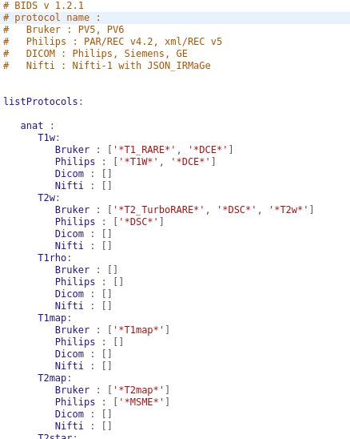

- This page explains how to definite the BIDS modalities by using the Modalities_BIDS.yml file which is located in MRI File Manager directory.
- This is necessary if you want to export your MRI data to Bids.
- This allows the user to match the structural data of Bids according to the protocol names of the images acquired on a patient.
- The file is written in Yaml. It can be modified by any user.
- See on
the official site of Bids, the explanation on this modalities.
- Edit the Modalities_BIDS.yml
- complete the list according to the format you are working on (do not remove items from the list, but add).
- lists contain regular expressions that define a search pattern in MRI sequence protocol names.
